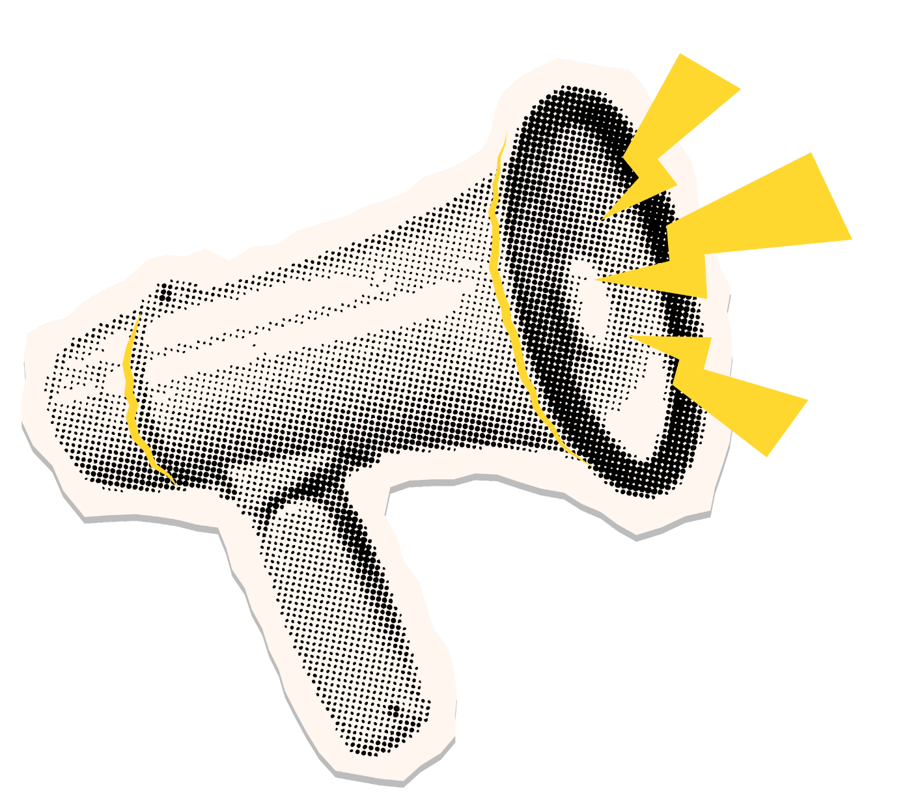
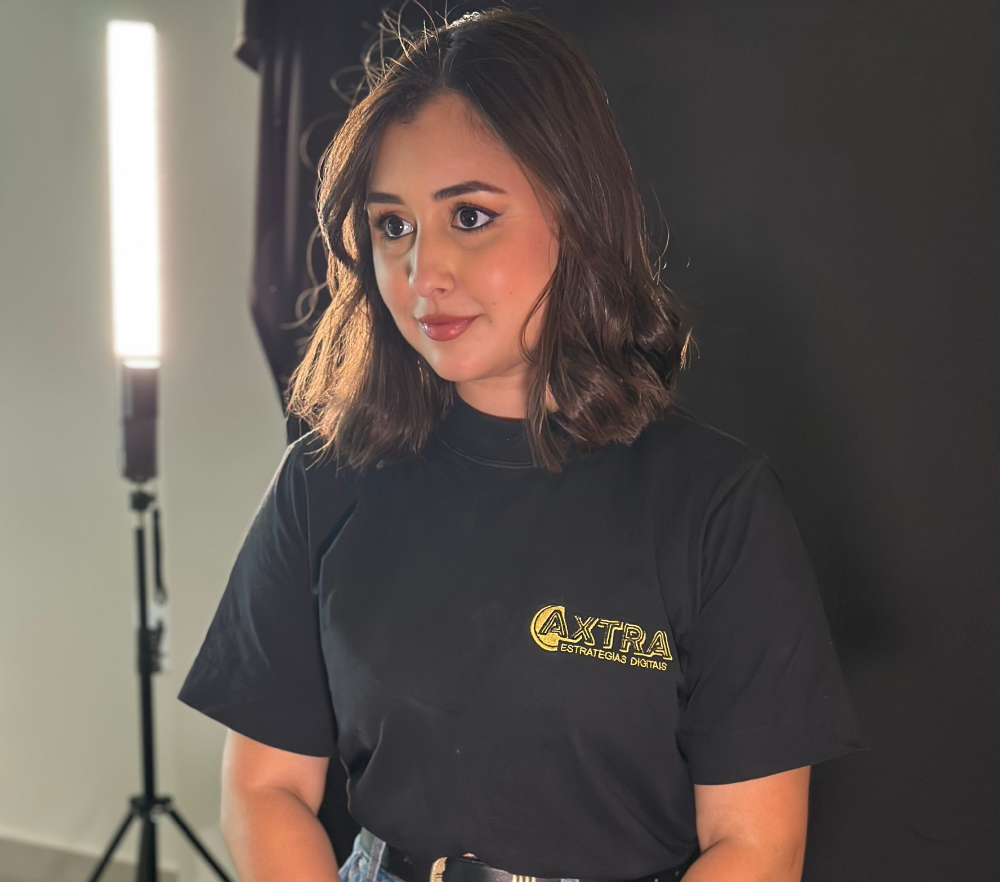
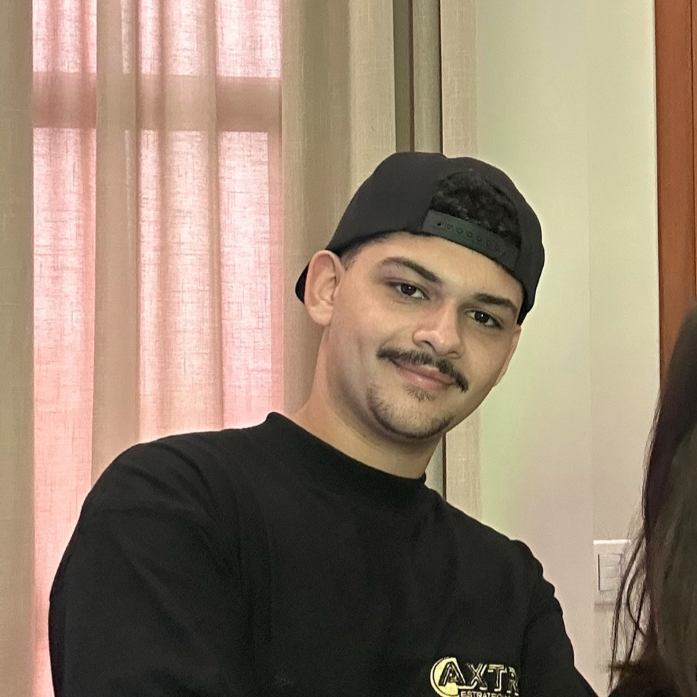

Você sabe onde quer chegar,
eu te mostro como.
Estratégia, criatividade e conteúdo para impulsionar marcas no digital. A Axtra desenvolve soluções estratégicas para e-commerces, fabricantes e prestadores de serviços, fortalecendo sua presença e conexão com o público.

Nosso diferencial
- Criação de conteúdo personalizado
- Produção de conteúdo orgânico
- Alguém para aparecer nos vídeos
- Transformar ideias respeitando a identidade da marca
100%
Autêntico, conhecemos o produto de perto, ouvimos quem está por trás da marca e damos voz ao público.
184%
de crescimento aos clientes da Axtra.
Conteúdo de verdade, do jeito Axtra
Na Axtra, cada conteúdo nasce da conversa com a marca e do olhar atento para quem vai consumir. Sem fórmulas prontas e sem atalhos.
Conteúdo autêntico
Criamos conteúdos autênticos, que refletem a identidade da marca e a voz de quem está por trás dela. Nada genérico: cada publicação tem a cara do seu negócio.
Natural e orgânico
Nosso trabalho é 100% orgânico, sem tráfego pago. Construímos presença e confiança aos poucos, com conteúdo relevante que atrai o público de forma natural.
Comunicação simples e transparente
Falamos de forma clara, sem jargões e sem promessas exageradas. Você acompanha cada etapa e entende o que estamos fazendo e por quê.
Pesquisa de público
Antes de criar, pesquisamos o público da marca: o que ele busca, como fala e onde está. É isso que torna o conteúdo certeiro e próximo.
Nossa equipe
Conheça quem está por trás dos conteúdos da Axtra.

Camily
Fundadora e diretora de estratégia e criação

Saymon
Videomaker e diretor de produção audiovisual
Você sabe onde quer chegar,
eu te mostro como.
Conte para a gente qual é o seu objetivo. Em uma conversa, entendemos o seu negócio e mostramos como o conteúdo orgânico pode levar a sua marca até lá.